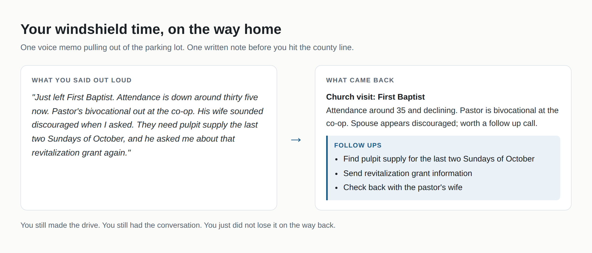
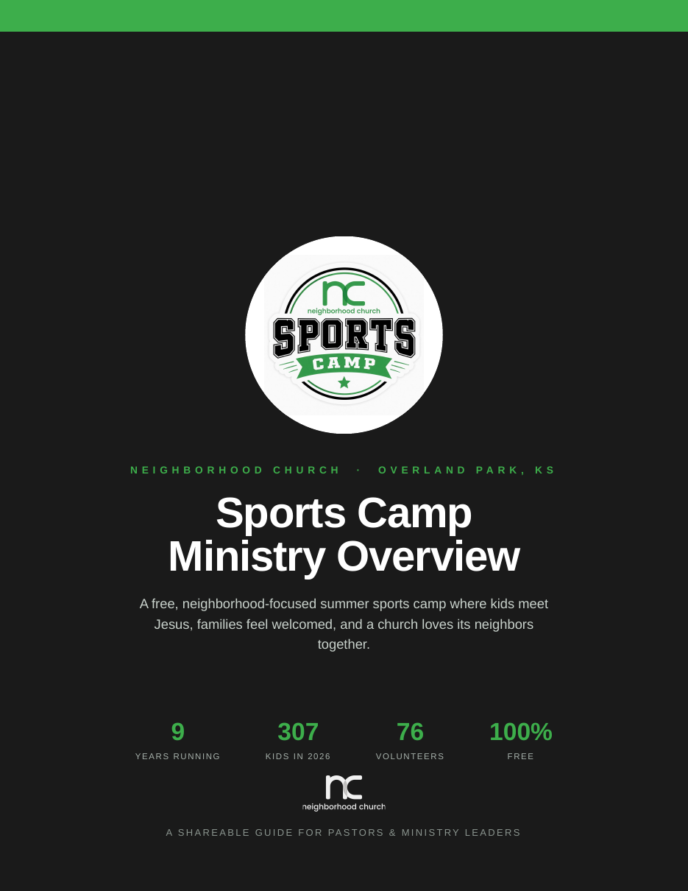
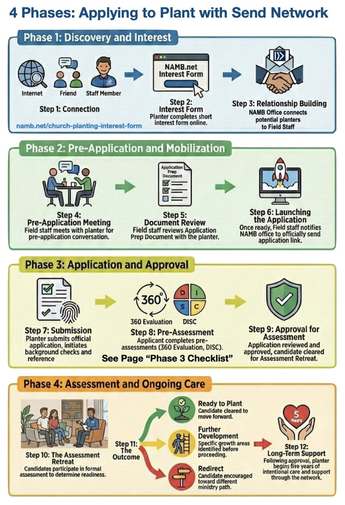

Type the word you were given to unlock it.
People are the job. AI is the assistant.
As Christian workers, our main focus is people. We want to help people connect with God and with the church, and we want to come alongside churches doing the same. Phones and laptops already help us network, run and promote events, and tell the church and the world what God is doing.
AI is the next tool in that same line, and it is a strong one. Used well it carries the typing, the drafting, and the keeping track, so our systems run better and we spend more of the week with people.
Nothing on this page assumes you have used these tools before. Start where you actually are, do one thing, and tell somebody about it.
AI cannot do the part that matters most.
Not "AI does my job." Instead: AI does the parts of my job that were never the point, so I can do the parts that are.
The names in the middle column change every few weeks, and you do not need to keep up with them. You need one account and one habit.
| Assistant | Models right now | Company | Led by | |
|---|---|---|---|---|
ChatGPT coding agent: Codex |
GPT‑6 Astra (newest) GPT‑5.6 Sol, Terra, Luna |
OpenAI | Sam Altman | |
Claude coding agent: Claude Code |
Fable 5.1, Opus 5 Sonnet 5, Haiku 4.5 |
Anthropic | Dario Amodei | |
Gemini built into Google apps |
Gemini 3.1 Pro Gemini 3.8 Flash |
Google DeepMind | Demis Hassabis | |
Grok built into X |
Grok 4.7 | xAI | Elon Musk | |
Copilot built into Office and Windows |
Microsoft MAI models, plus OpenAI and Anthropic models |
Microsoft | Satya Nadella |
Checked September 8, 2026. If a model name here looks out of date by the time you read it, that is the point: pick one assistant, learn it, and let the version numbers race without you.
The free versions are real but slower and more limited. Paid is the difference between a novelty and an assistant. Pick one, ChatGPT or Claude, and stay with it for a month rather than sampling four.
Most people type six words, get something generic back, and decide the tool is overrated. Tell it who you are, who it is for, how long it should be, and what you want it to sound like. The difference is not subtle.
Nobody is behind. You are just somewhere. Everybody goes up exactly one level, not three.
Asking it a question instead of searching the web, and handing it something long instead of reading all of it. Lowest possible risk, easiest place to start.
Using it to write the thing that has been sitting undone. It gets you to about seventy percent in under a minute. The last thirty percent is still yours, and it always will be.

Now think about your annual report on every church in the association. It nearly writes itself, and the pastor feels remembered.
Making something that did not exist before. Most people assume they cannot reach this level. It is the one that pays back the most, because you build it once and it serves people for years.
Make a good thing reproducible. Our church runs a free neighborhood sports camp every June. Other pastors kept asking how we do it and I kept re-explaining it, so I had everything we know turned into one document another church could pick up and run: schedule, budget, volunteer structure, timeline.
You have something your association does well. Somebody in another association is going to ask you about it. Make it once instead of explaining it eleven times.


Turn a pile into one page. Every potential church planter I work with goes through a pre-application packet. It was a stack of PDFs nobody could hold in their head. I had the whole stack read and synthesized, the folder reorganized, and this made: one picture a man can look at once and finally understand what he is walking into.
Yours might be the constitution, the bylaws, four years of minutes and the personnel policy. Right now that is a drawer. It could be one page a search committee could actually read.
Turn training into a link. Material you already teach can become a page you text to a pastor instead of a binder you mail him. All three are free, all work on a phone, and none of them required knowing how to write code.
Tap any phone to open it.
None of these started as projects. Every one started with a problem.
It gets you most of the way there and hands it to you with total confidence, including when it is wrong. It will invent a date, a statistic, or a Scripture reference that sounds right. Check names, numbers, dates and Scripture, then fix the voice. It is a very fast typist with no discernment. You are still the one with discernment.
A pastor's marriage, a moral failure, a church fight, a personnel file. Take the names out. "A pastor in a church of forty is dealing with a conflict between two deacons" gets you the same help and costs you nothing. If you would not put it on a postcard, think before you paste it.
The newsletter, the annual calendar, the visit notes from a two hour drive, the report to the state office, the ordination council question set, the county demographic picture, the forty page document condensed for a man with twenty minutes. None of this touches the part of your work that is actually yours.
Confirmation emails that sound like a person wrote them, packing lists by age group, retreat schedules, summer staff onboarding material, dietary and food count summaries, work order logs, and honest description copy for the families and civic groups who have never been out there.
Minutes from a recording, form letters that do not read like form letters, scholarship applications summarized side by side, expense categorization, a spreadsheet turned into a chart for a board report, and the first draft of anything you have been dreading.
One task. Not three. Pick the smallest real thing on your desk.
When you learn something useful, tell somebody. Call the strategist two counties over and show him. And when you hear that somebody else is trying something, go try it yourself. Try it badly. Ask for help out loud, from somebody younger than you if that is who knows.
The point was never speed. The point is the hour it gives back, and the pastor in a town of nine hundred who has not had anybody ask how he is doing since March.